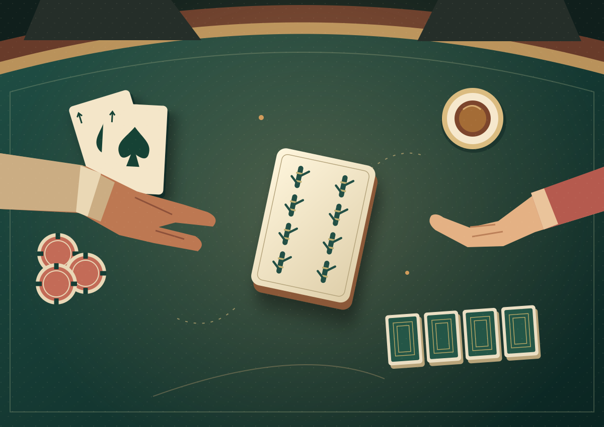

A BOOK WITH A VERSION HISTORY.
PLAY TO WIN, DON’T PLAY NOT TO LOSE / V02 / 17 OCT 2026
Play to Win,Don’t Play
Not to Lose
Một quân mạt chược.
Một cách nhìn khác về thắng và thua.

LOVE / BELIEFS / GAME THEORYKIND OF WIN.
Play to Win,Don’t Play
Not to Lose
Nhân ngày rảnh rỗi nên cho phép tớ được xàm xí một tí.
Và rồi Rachel đánh ra quân tám tre.

“Một quân mạt chược mà làm người ta phải tính lại cả bài toán.”DETAIL / SELECTED EXCERPTS
Two-page composition study · Full chapter: 41 paragraphs, unchanged
Play to Win,Don’t Play
Not to Lose
Nhân ngày rảnh rỗi nên cho phép tớ được xàm xí một tí.
~12 MIN READ / ORIGINAL TEXTPlay to Win,Don’t Play
Not to Lose
Một quân mạt chược.
Một cách nhìn khác.
Read the whole story first. The matrix lives one step deeper.
A winning hand. An open hand. A different way to see the game.
 01 / THE HOOK
01 / THE HOOKPlaying not to lose, instead of playing to win.
.JSON / CHAPTER 0604 / RECONSIDERMột quân mạt chược mà làm người ta phải tính lại cả bài toán.
.JSON / CHAPTER 0600–08s01 / SỢ MẤTChơi để không thua.
 08–20s
08–20s02 / HAI PHÍAMỗi người muốn gì?
03 / NƯỚC ĐIQuân tám tre.
34–48s04 / HIỂU LẠIBeliefs thay đổi.
 48–60s
48–60s05 / NGOÀI ĐỜITiếp tục học.
Reels / TikTok / Short + YouTube reading excerpt (2–3 min proposed)
Not to Lose
Optional collector direction:
A4 art print + eight-bamboo bookmark.
Core artwork first; text stays on its own layer.
Đổi góc nhìn.
Cùng những lựa chọn. Điều gì khác khi ta hiểu thêm về người đối diện?
PROTOTYPE
ELEANOR →Chấp nhậnNgăn cảnỞ bên NickRời đi
Trước cuộc đối thoại: Eleanor tin rằng Rachel rời đi thì Nick sẽ trở về với gia đình. Chọn một ô để xem giả định.
Diễn giải định tính từ bài viết; Nick là người chịu tác động ngoài hai trục này. Không gán điểm hay khẳng định cân bằng Nash. Bản đọc đầy đủ luôn đứng độc lập.
One story.
A connected collection.
| Original manuscript · 41 paragraphs | PRESERVED |
| Key art + 6 scene compositions | DESIGN STUDIES |
| A5 chapter + A4 poster | PLANNED |
| Desktop / mobile reader | MOCKUPS |
| Beliefs & payoffs explorer | STUDY |
| 5-card carousel + platform pack | LAYOUTS |
| Video edits / recorded narration | PLANNED / PENDING |
| QA / publication | LATER STAGE |
Design approved → refine artwork → build full products → review → publish on instruction.
Confirmed book number.
Original heading “5” stays intact.
Live 05 is For Mother Russia.